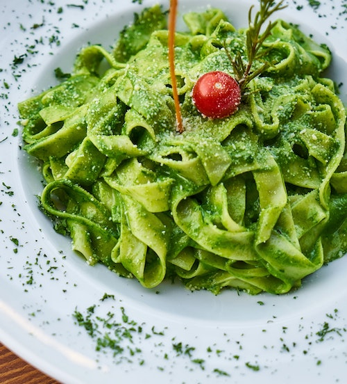

gluten-free sugar cookies
 prep time: 10 Min prep time: 10 Min |
 cook time: 10 Min cook time: 10 Min |
 total time: 10 Min total time: 10 Min |
These buttery cookies have a tender texture and crispy exterior that you’re sure to love!
ingredients
- 2 1/2 cups gluten-free flour
- 1 cup almond flour
- 1/4 teaspoon salt
- 1/2 teaspoon baking powder
- 1/4 teaspoon baking powder
- 1/2 cup softened, unsalted butter
- 1 cup sugar
- 2 teaspoons vanilla extract
- 1 egg
directions
- Preheat oven to 350° F. Line baking sheets with parchment paper.
- Add flour, salt, baking soda, and baking powder to a bowl and stir.
- In another bowl, beat butter and sugar together.
- Add egg and vanilla extract to the butter and sugar mixture.
- Combine the wet and dry ingredients in a bowl. Stir until fully combined.
- Drop teaspoon-sized dough onto the parchment paper. Keep dough 1 to 2 inches apart. Bake for 10 to 12 minutes.

nut-free basil pesto
| prep time: 5 Min |
cook time: None |
total time: 5 Min |
This gorgeous pesto is full of color and flavor! Serve on your favorite pasta or crackers for a delicious, healthy meal.
ingredients
- 1 cup packed basil leaves
- 1 chopped garlic clove
- 1/4 cup grated parmesan cheese
- 1/2 tablespoon lemon juice
- Pinch of salt
- 1/4 cup olive oil
directions
- In a food processor, pulse garlic and basil together.
- Add parmesan cheese, lemon juice, and salt. Pulse again.
- Add olive oil and blend. If the mixture is too thick, add more oil or hot water to thin.

watermelon salad
| prep time: 15 Min |
cook time: None |
total time: 15 Min |
This salad combines juicy watermelon, tangy lemon juice, savory feta cheese, and sweet honey into one delicious bowl. Serve right away on a hot summer day for a cooling treat!
ingredients
- 1 seedless watermelon
- 1/3 cup extra virgin olive oil
- 2 tablespoons fresh lemon juice
- 1 tablespoon honey
- 2 teaspoons salt
- 2 cups feta cheese, crumbled
- 1 cup red onion, sliced
- 1/4 cup basil leaves, chopped
directions
- Cube watermelon, or use a melon baller to scoop chunks of watermelon. Place in a large bowl.
- In a separate bowl, combine the olive oil, lemon juice, honey, and salt.
- Add feta cheese, basil, and red onions to the mixture.
- Pour the mixture over the watermelon.
- Toss watermelon with the mixture and serve immediately!